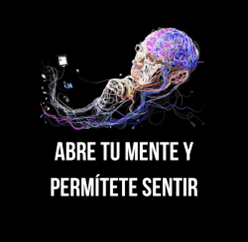
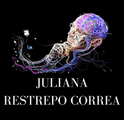

 
Color negro: es un color que transmite fuerza y elegancia, es lo que quiero transmitir con mi marca personal, además, a muchos les puede generar otros sentimientos negativos, pero a mi me genera como misterio, profundidad, complejidad e integridad.
Color blanco en la tipografía: primero, porque el blanco y el negro combinan bien, uno complementa al otro, además, son los que me identifican. Por otro lado, es porque el blanco representa la simplicidad, yo soy una persona simple, pero puedo llegar a ser compleja en otros aspectos, por eso el color negro, representa esa complejidad, entonces esos dos colores representan dos aspectos de mi vida que me complementan como persona y lo que soy.
Elementos (imagen): la imagen representa que en todo momento estoy preguntándome sobre mi misma, siempre estoy conociéndome y encontrando mi ser, para llegar a ser lo que quiero, a parte, soy muy visual, veo el mundo y me adapto a él pero sin perder mi ser ni mi esencia, por otro lado, el conocerme y estar en una constante búsqueda de mi me permite verme de diferentes maneras y afrontar las diferentes circunstancias a mi manera, me permito ser yo y siempre trato de pensar antes de realizar una acción que puede traer consecuencias para mi vida, las líneas que salen de la cabeza, es que también me gusta dejar que las situaciones fluyan y que pase lo que tenga que pasar.
Mi nombre: es mi ser, mi esencia, por lo que me reconocen y por lo que saben quien soy, más eso no significa que me conocen, saben mi nombre más muchos no saben quien soy ni lo que puedo ofrecer, por eso mi nombre y mis colores se complementan tan bien, porque juntos forman un misterio.